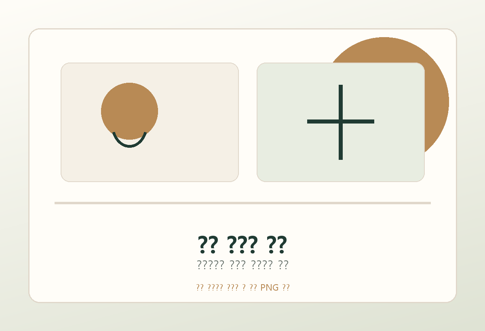
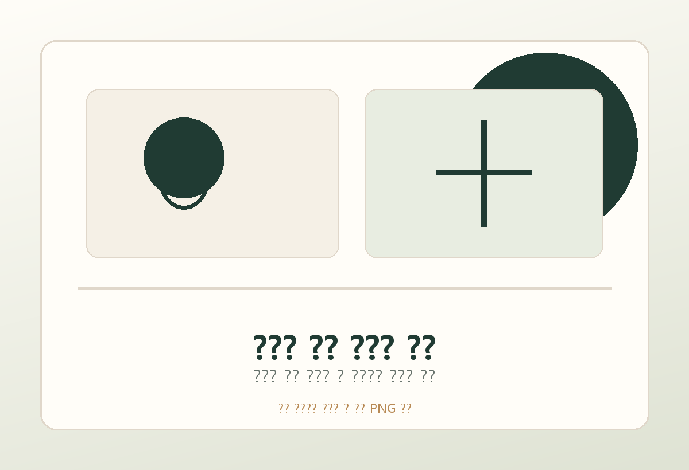
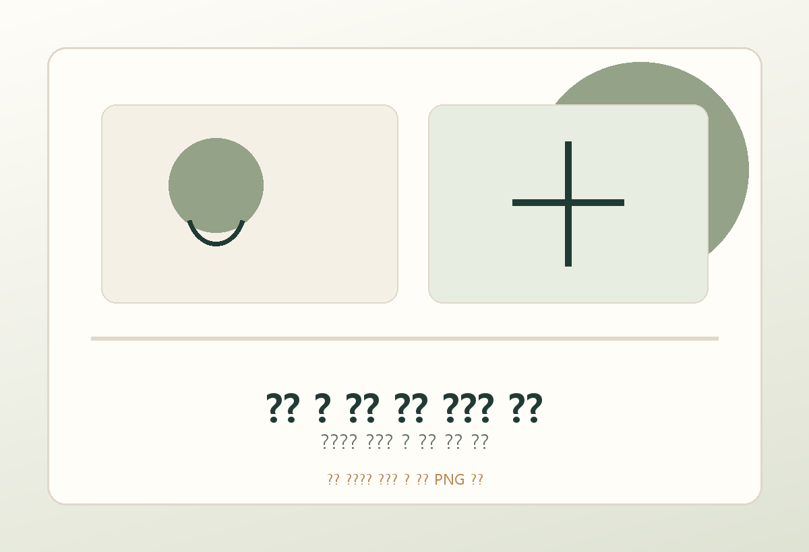

작은 변화를 놓치지 않겠습니다.
식욕, 활동성, 호흡, 체중처럼 보호자가 먼저 알아차리는 신호를 진료의 중요한 출발점으로 삼겠습니다.

스무 살의 바램에, 한 살을 더합니다.
스물하나 동물병원은 정확한 진단과 충분한 설명, 보호자와 함께하는 꾸준한 관리로 아이의 시간을 더 오래 지키고 싶습니다.
반려동물의 스무 살은 보호자에게 특별한 의미를 가집니다. 그 시간을 함께 맞이하는 것만으로도 큰 바람이자 목표가 됩니다.
하지만 우리는 거기서 한 걸음 더 나아가고 싶었습니다. 단지 오래 사는 것이 아니라, 불편함을 조금 더 일찍 발견하고, 필요한 관리를 놓치지 않으며, 아이가 보호자 곁에서 더 건강한 하루를 보낼 수 있도록 돕는 것.
그래서 이름을 스물하나 동물병원이라고 지었습니다. 스무 살의 꿈에 한 살을 더 보태는 병원. 그 마음이 저희가 진료를 대하는 기준입니다.
식욕, 활동성, 호흡, 체중처럼 보호자가 먼저 알아차리는 신호를 진료의 중요한 출발점으로 삼겠습니다.
검사와 치료를 권하기 전, 무엇을 확인하려는지와 선택 가능한 방향을 보호자가 이해할 수 있게 설명하겠습니다.
정확한 진단과 꾸준한 관리로 아이와 보호자가 오래 안정적으로 함께할 수 있는 방법을 찾겠습니다.
아이와 더 오래 함께하기 위해 무조건 많은 검사가 필요한 것은 아니라고 생각합니다. 반대로, 꼭 필요한 검사를 놓치는 것도 좋은 진료가 아닙니다.
스물하나 동물병원은 그 사이에서 지금 아이에게 필요한 진료가 무엇인지 신중하게 판단하고, 보호자가 납득할 수 있도록 설명하는 병원이 되고자 합니다.
아이에게 필요한 만큼, 보호자가 납득할 수 있는 만큼.
2차 동물병원에서 7년 이상 다양한 케이스를 경험한 영상전공 수의사가 초음파로 아이의 몸 안쪽 변화를 세밀하게 살피고, 10년 이상 임상 현장에서 수많은 아이들을 만나온 원장이 증상, 나이, 생활환경, 보호자의 상황까지 함께 고려합니다.
스물하나 동물병원은 한 가지 검사 결과만으로 서둘러 결론 내리기보다, 경험과 영상 진단, 보호자의 이야기를 함께 놓고 아이를 바라보겠습니다.

내과 진료 · 건강관리 상담
임상 경험을 바탕으로 증상, 생활환경, 보호자의 상황까지 함께 고려하는 진료

초음파 진단 · 영상 평가
2차 동물병원 7년 이상 근속, 다양한 케이스 기반의 초음파 진단
아이들은 아파도 정확히 어디가 불편한지 말하지 못합니다. 그래서 작은 식욕 변화, 활동성 저하, 기침, 호흡 변화, 체중 변화도 중요한 신호가 될 수 있습니다.
스물하나 동물병원은 건강검진, 초음파, 심장 평가를 통해 겉으로 드러나지 않는 변화를 더 세밀하게 살피고자 합니다.
검사는 단순히 이상을 찾기 위한 과정이 아니라, 아이와 더 오래 건강하게 지내기 위한 관리의 시작이라고 생각합니다.
나이, 품종, 생활습관, 기존 병력에 따라 필요한 검사 범위를 함께 정합니다.
혈액검사만으로 알기 어려운 장기 변화를 영상으로 더 세밀하게 살핍니다.
청진, 영상검사, 생활 변화, 보호자의 관찰을 함께 고려해 현재 상태를 평가합니다.
보호자님이 진료실에서 걱정하는 마음을 알고 있습니다.
스물하나 동물병원은 검사와 치료를 제안하기 전 왜 필요한지, 무엇을 확인하려는지, 지금 해야 할 일과 지켜볼 수 있는 일을 가능한 한 쉽게 설명하겠습니다.
보호자가 이해하고 선택할 수 있어야 아이의 관리도 더 오래, 더 안정적으로 이어질 수 있다고 믿습니다.



병원의 실제 외관, 진료실, 대기 공간, 장비 사진이 준비되면 이 영역에 바로 교체할 수 있습니다. PC에서는 사진을 넓게 보여주고, 모바일에서는 한 장씩 자연스럽게 이어지도록 구성했습니다.
보호자가 병원을 방문하기 전에도 공간의 분위기와 진료의 결을 미리 느낄 수 있도록, 사진은 소개 문구 사이사이에 충분한 호흡으로 배치합니다.
주요 진료비용은 별도 안내 페이지에서 확인하실 수 있습니다.